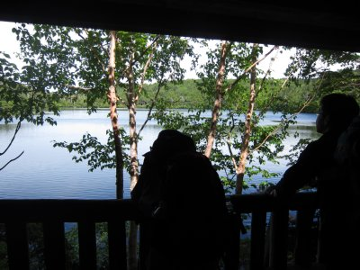
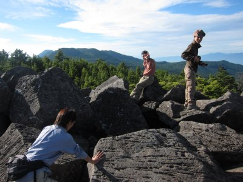
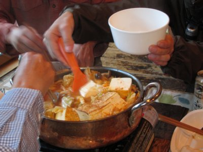
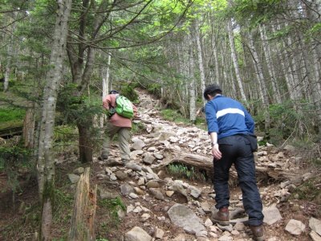

高見石トレッキング | 2013年7月 幹事：Ｒｙｕｕ |
|---|---|
| 簡単な登山というかハイキング的な山に行きましょう！ と、Ryuuさんに誘われ、参加者5名で八ヶ岳の高見石に行ってきました。 「簡単な」という言葉に騙されがちな我々ですが、今回は本当に簡単なコースです。いや、山に入ったと言えないぐらいにです。食事に行ったんです！(笑 １日目 八ヶ岳の麓、定食屋「こふく」にて昼食を取り、近くのスーパーで買い出し。 分かりますか？ 既に昼を過ぎてますよ。のんびりですよ。 | |
|  しらこま池にて |  高見石小屋 |
| スーパーにて、登山食とは思えないような食材を買い、麦草峠近くのしらこま池まで向かいます。しらこま池から登るのですが、ここから1時間ぐらいで高見石小屋、本日の宿泊地です。マジ近いです。 高見石は、山頂に大きな岩がゴロゴロしていて、とても見晴らしが良いですね。眼下にしらこま池が見えます。 さて、夕食の準備を。 今回は、小屋で食事を頼まず自分たち調理します。と言っても台所が有るわけではないため、簡単に切って鍋で煮込むだけですが。 本日の夕食、チゲ鍋的なモノ。〆にラーメンをぶち込む。あと酒。Ryuuさんが小型卓上コンロと銅鍋を持ってきてくれて、山食ではない夕食です。 周りに宿泊客が羨ましがってました。 この小屋は、夜になると天体望遠鏡を出して星を見せてくれるのですが、この日は薄く雲が掛かっていて、月とかをかろうじて見る程度でした。 | |
|  高見石山頂 大きな石がゴロゴロです |  夕食風景 |
|  銅鍋でチゲ鍋 |  朝食はテラスで |
| 2日目 朝5時。外が明るくなってきたので起き出して高見石へ。朝焼けは終わっちゃったけど、朝のすがすがしい空気に包まれて最高です。 さて、朝食です。メニューはミネストローネ風鍋 蒸しキャベツ＆もやし パンと珈琲です。これまた朝から贅沢に最高の食事です。ゆっくり食べていたから、他の登山客が羨ましそうに横目で見ながら出発していきました。 本日の行程は、高見石から丸山を経由して麦草峠へ。この辺りは木々の中を歩いていくので眺望はよくありません。しかし、苔むした森が素敵です。 | |
 朝から優雅に食事 |  茶臼山までに道。けっこう急ですよね |
| 麦草峠までだと、1時間半で付いてしまうので、ついでに茶臼山まで登ることにしました。（若干2名ほどは麦草ヒュッテでマターリ、コーヒー集会） 茶臼山は登り一辺倒です。山頂は「ここ山頂？」って位に木に囲まれた場所でガッカリしますが、実は、もうちょっと進むと、展望がナイスな場所に出ます。ここ最高です。 そんな感じの、お手軽ハイキングでしたが、山に行ったのに何故かお腹一杯になって帰ってきました。こんな山登りも良いな〜 Ryuuさんコンロと鍋有り難う！ツクさん差し入れワインとウィスキー有り難う〜 | |
 茶臼山展望台より |  茶臼山展望台にて |
| コメント＆写真 ｂｙ べっしー | |